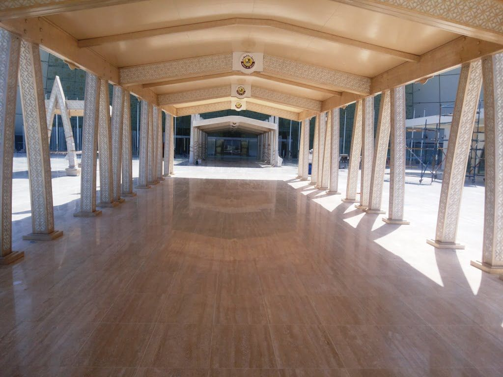
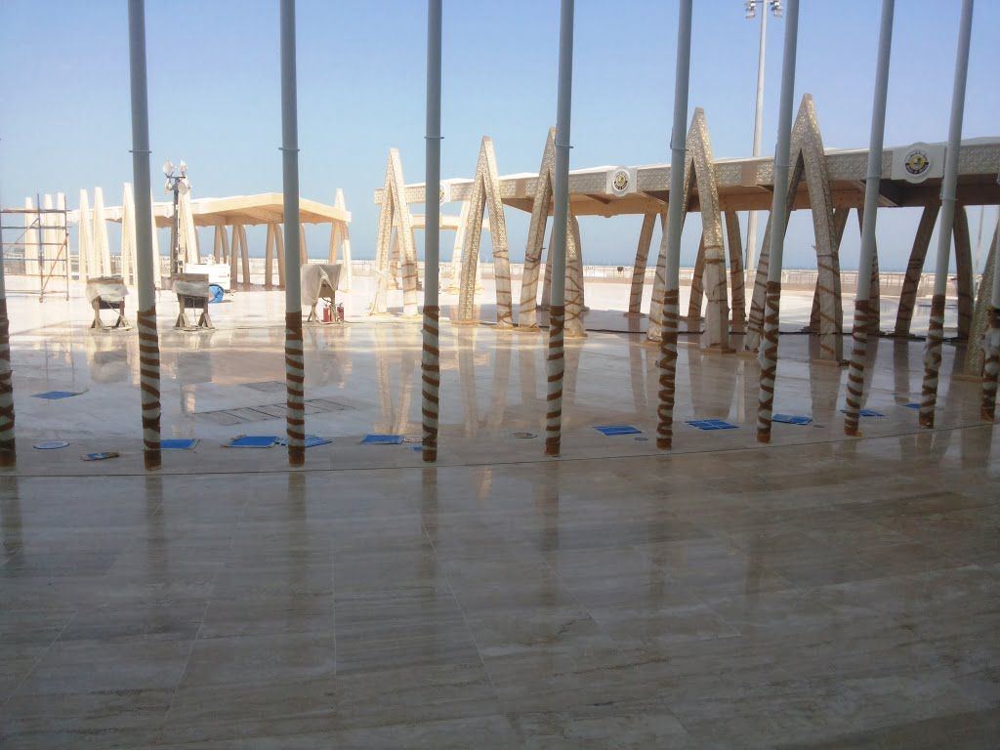
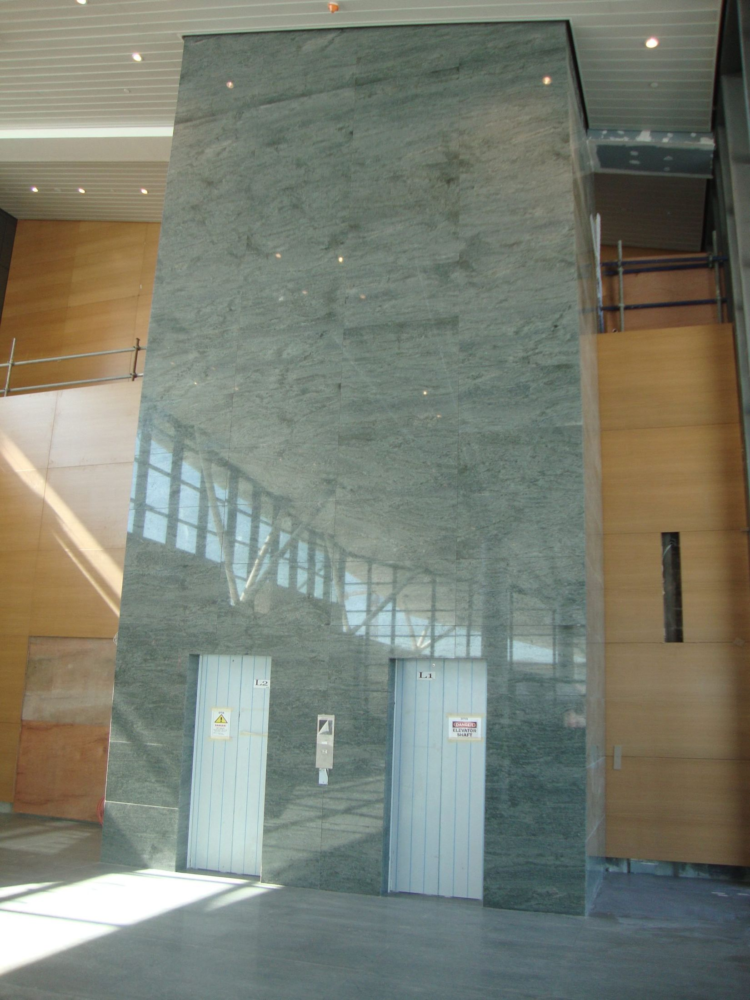
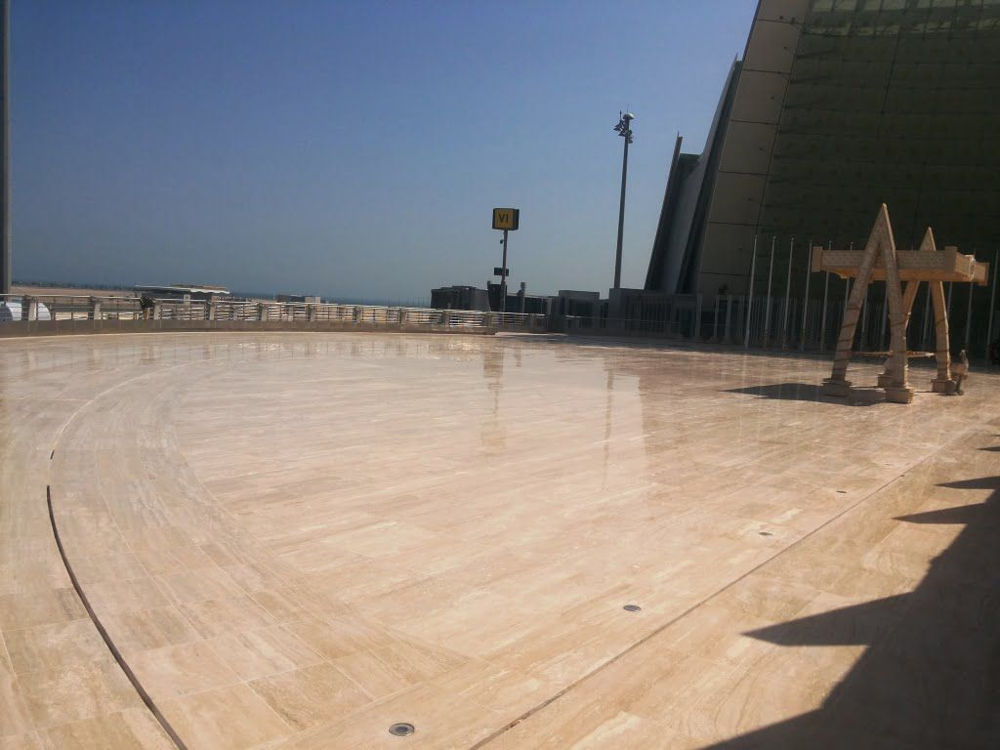
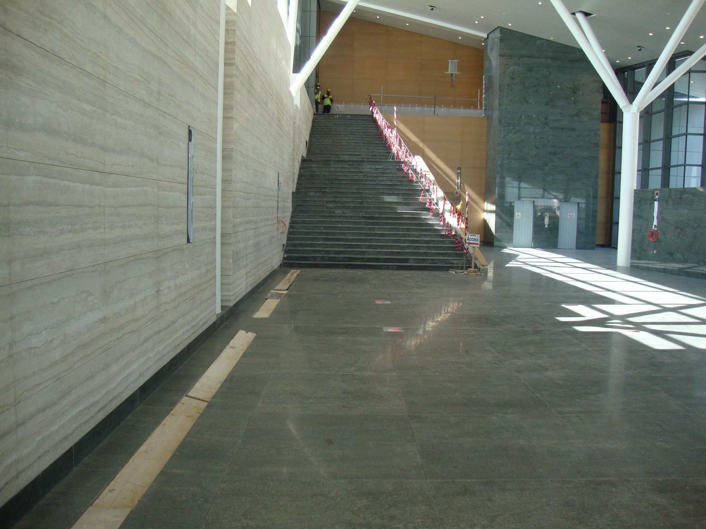
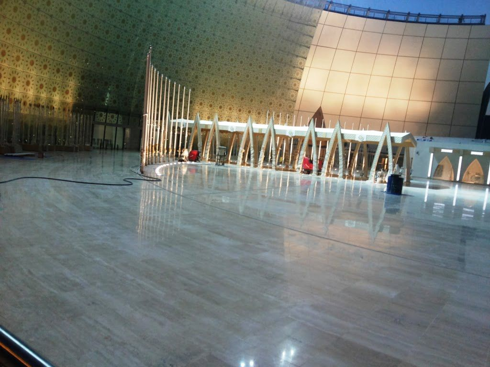
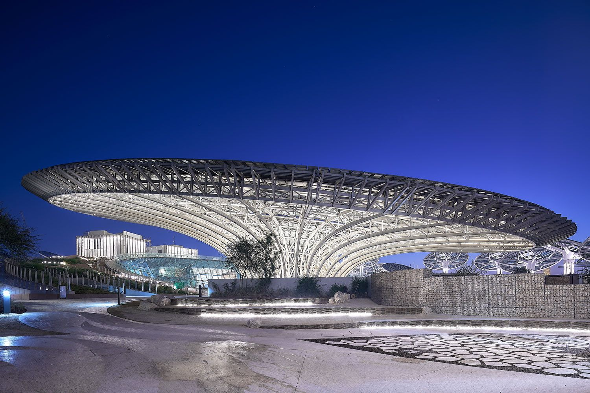

Outside
Plaza paving
The forecourt, drop-off and canopy zones.

At the Emiri Terminal of Hamad International Airport, El Alfy laid the stone of the arrival plaza and finished the floors and walls inside, from the kerb to the terminal hall.
Paving under the canopy.
Banded stone, laid to the curve.
The covered walk to the doors.
Stone floors and clad walls.






The forecourt, drop-off and canopy zones.
Floors through the walkway and terminal hall.
Stone walls and the lift core.
